Weekend Billiard / Market Intelligence OS
КОНКУРЕНТЫ
Локальная сборка последних экранов Stitch: строгий инженерный дашборд для мониторинга конкурентов, узлового анализа, журнала сигналов, инсайтов и генерации отчетов.
STATUS
STITCH EXPORT / LOCAL PATCHED
SCREEN 01
Командный обзор
Главное окно портала: KPI, сравнительные графики и базовая линия Weekend Бильярд.
OPEN_OVERVIEW
SCREEN 02
Граф связей
Узловой дашборд: конкуренты, источники, сигналы и связи относительно нашей компании.
OPEN_GRAPH
SCREEN 03
Обсерватория
Лента конкурентных событий: Ozon, сайты, каналы, новости, финансы и маркетплейсы.
OPEN_OBS
SCREEN 04
Инсайты
Приоритизация рисков, преимуществ и тактических действий по конкурентам.
OPEN_INSIGHTS
SCREEN 05
Отчеты
Студия презентаций: быстрый, общий, глубокий и стратегический формат отчета.
OPEN_REPORTS
LOGO SOURCE: logo/weekend_logo.png
TEXT PATCH: КОНКУРЕНТЫ / RUNTIME MOJIBAKE FIX